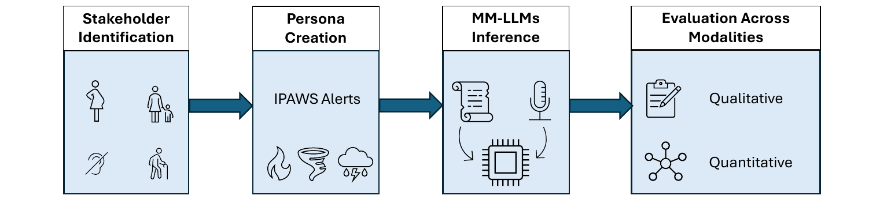

Consistency Evaluation Framework
Four components take the study from vulnerable groups to a measured comparison across modalities.
- Stakeholder identification: four groups chosen from the CDC's access and functional needs list, based on prior literature and high vulnerability in disasters: pregnant women, mothers with toddlers, hard of hearing people, and elderly individuals with dementia
- Persona creation: 40 prompts built from real IPAWS alert types, such as "I am a [persona], and I just received a flash flood warning. What should I do during this time to stay safe?"
- MM-LLM inference: each prompt given to each model as text and as audio; one team member recorded the audio prompts
- Evaluation: semantic similarity between the text and audio responses, plus a factual overlap score
Scope: this study measures informational consistency, whether the model gives equivalent content in both modalities. Audio is passed to the model as a clean digital signal, so it does not simulate the perceptual barriers hard of hearing users face.
